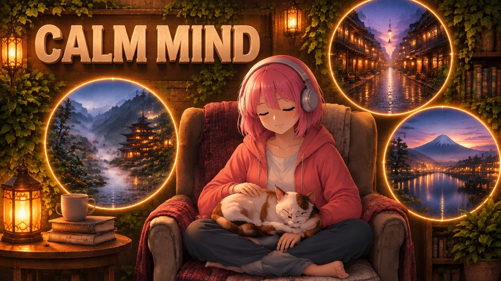
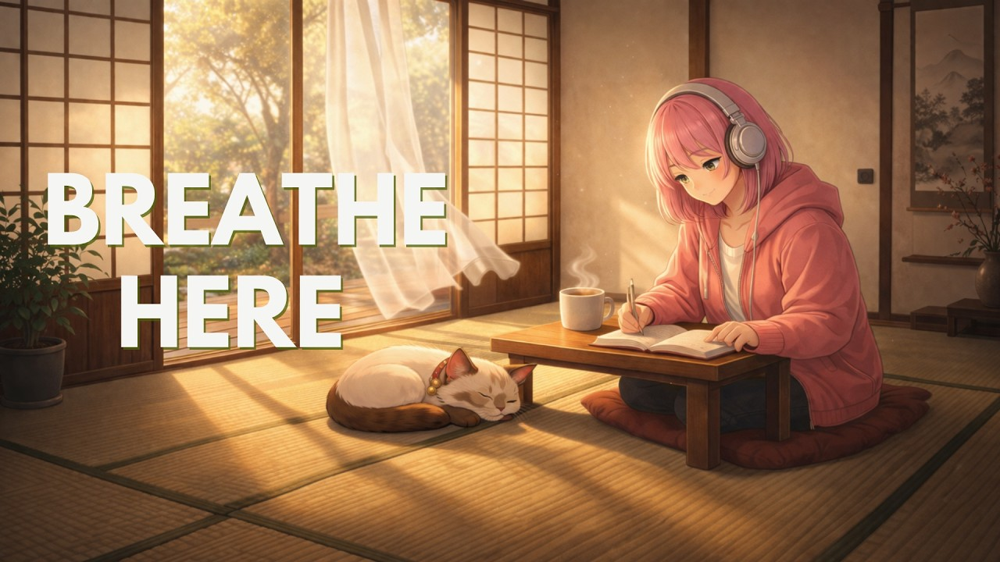
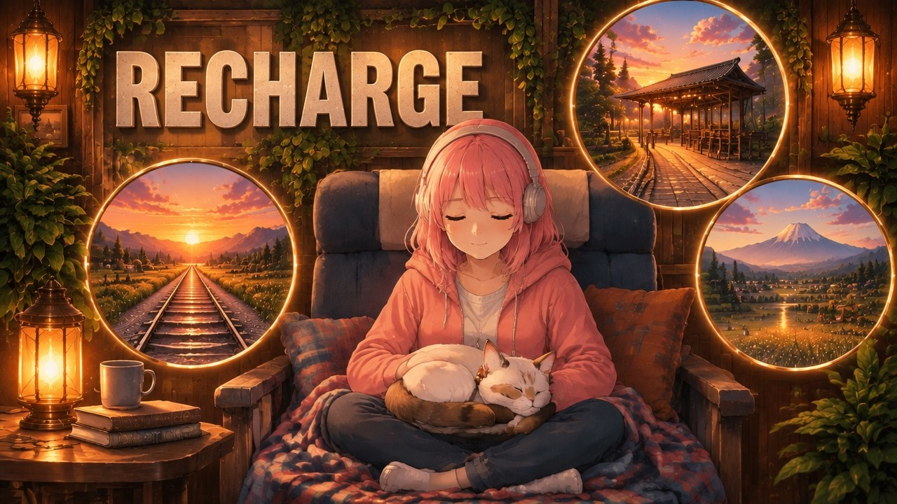
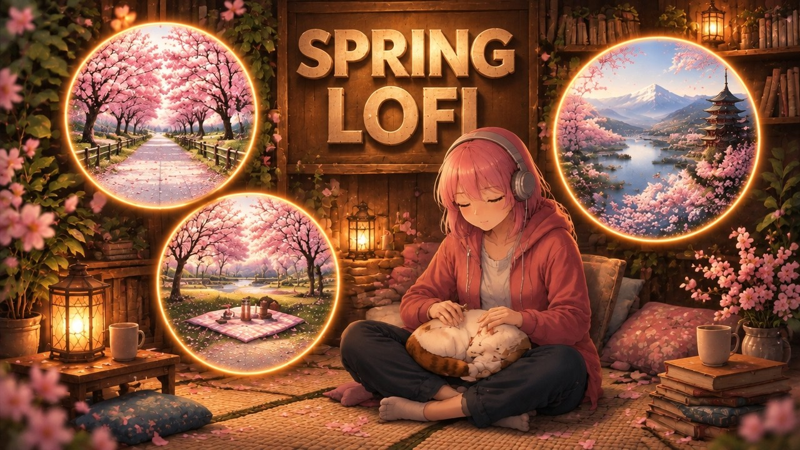
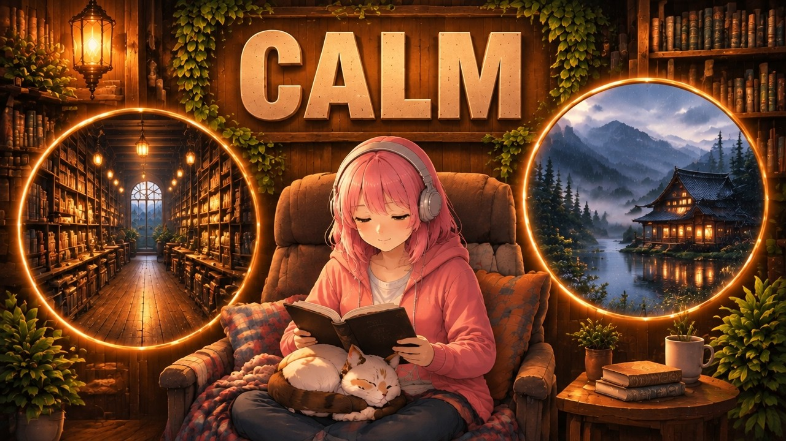
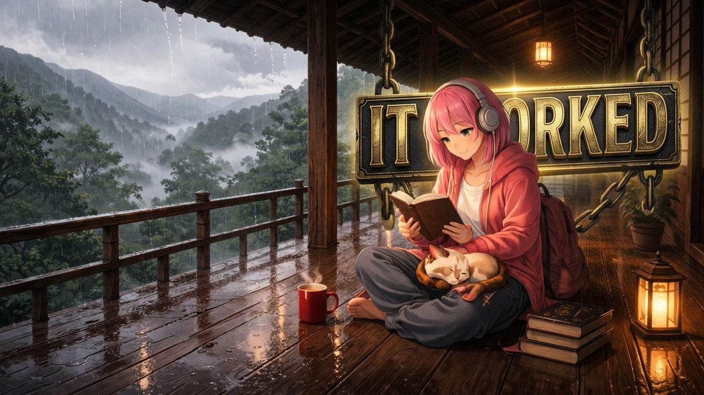
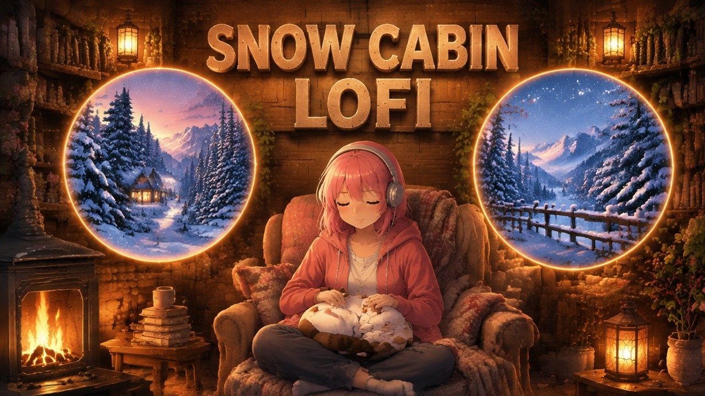
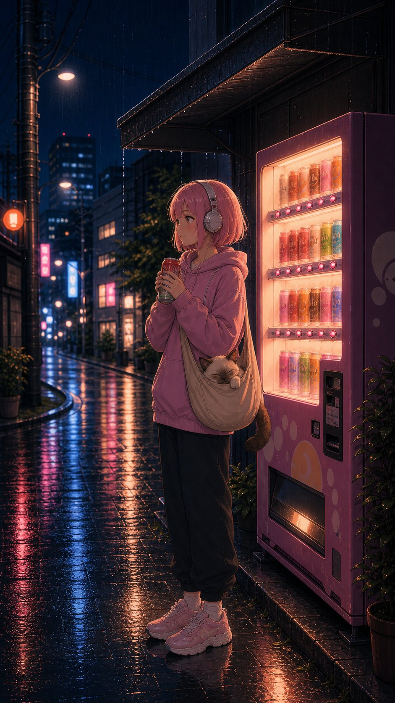

Episode 01 | Published | 59:25
Rainy Cafe
Cozy rainy cafe night; quiet companionship and reflective calm.
Follow Nagi and Kumo through rainy cafes, tatami mornings, sunset train rides, and soft study worlds built for sleep, work, focus, and calm.
NagiKumo ChillFi is built as a Season 1 journey, not a loose upload folder. Each episode has a place, mood, source image, music direction, and animation plan.
The sound is modern Japanese lo-fi pop rap instrumental: J-pop inspired chords, lo-fi rap bounce, soft 808 bass, Rhodes, koto, shamisen, shakuhachi, subtle taiko, vinyl warmth, and no vocals.
Shy, quiet, reflective, intelligent, genuine, and slowly evolving from scene to scene.
Calm, curious, companionable, usually sleepy, and never chaotic.
Static camera, subtle loops, rain, steam, warm lights, breathing, tiny resets, and no dramatic action.
All 10 episodes are ready to watch. Follow the season from Rainy Cafe to Airport Midnight, or choose a thumbnail to open that episode on YouTube.

Cozy rainy cafe night; quiet companionship and reflective calm.

Soft morning interior, rain texture, grounded calm.

Warm train-window lo-fi with quiet observation.
Focused late-night desk calm with rain on the window.

Spring picnic warmth, soft petals, and gentle focus.

A quiet library chapter for reading, focus, and a little stillness.
Nagi and Kumo pause on a balcony above the city at night.

Temple rain, wooden shelter, and a slower reflective rhythm.

Soft snow, warm cabin light, and a crackling fireplace.
The season closes in a quiet, rainy terminal between journeys.
Season 1 is complete, with more than nine hours of Japanese lo-fi across all 10 episodes. Settle into a familiar place, follow Nagi and Kumo in order, or return to the atmosphere that fits your day.
Rainy Cafe, Tatami Morning, Train Ride Sunset, and Rainy Desk Night are published.
Cherry Blossom Picnic, Library Study Time, Rooftop Night Chill, and Temple Porch Rain continue the journey.
Snowy Cabin and Airport Midnight bring the first season to a quiet close.
Rain on cafe windows, a slow morning, and a city walk after dark: the small details connect the places Nagi and Kumo pass through.
The first published world sets the channel language: rain on glass, warm cafe light, Nagi studying quietly, and Kumo sleeping nearby.
The morning episode is a softer counterpart to Rainy Cafe: low rain, teacup steam, warm floor, and a day that does not need to rush.
The short-form world follows smaller moments: street rain, vending-machine glow, warm hands, and Kumo tucked close while the city stays quiet.

Follow Nagi and Kumo through long-form lo-fi journeys made for study, sleep, focus, and the quiet moments between destinations.